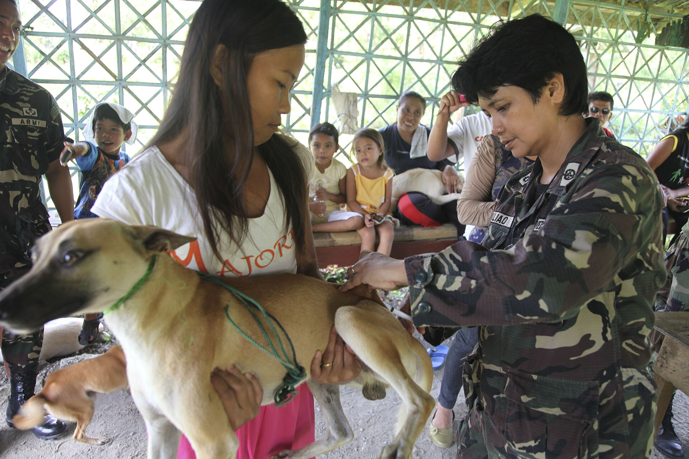
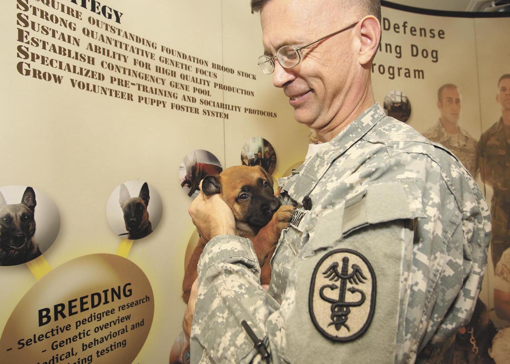
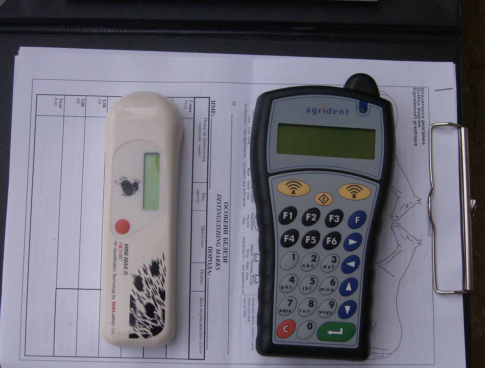

Klinisk undersökning
Djuret vägs och allmäntillståndet bedöms. Först därefter avgör veterinären om sprutan kan ges.
Ingen spruta sätts utan att veterinären först har känt igenom djuret. Hjärtat och lungorna lyssnas av, och du får berätta hur det mår hemma. Vaccinationsintyget skrivs ut på plats, med batchnummer och datum för nästa påfyllnad. Ett besök tar 20 till 30 minuter, och du är med i rummet hela tiden.
Så tänker vi
En vaccination är ett ingrepp i immunförsvaret. Därför börjar varje besök med samma rutin: veterinären väger djuret och lyssnar på hjärtat. Sedan känns lymfknutor och mage igenom. Tar undersökningen mer än tio minuter betyder det att något avviker, och då pratar vi om det innan sprutan.
Vaccinet dras upp ur kylskåpet medan du sitter kvar i rummet. Det ges under huden i nacken och tar några sekunder. Efter sprutan väntar vi tio minuter innan du får gå, eftersom en reaktion nästan alltid kommer direkt.
Har djuret feber eller står på kortison skjuter vi på vaccinationen. Samma sak om ett sjukdomsförlopp inte är avslutat. Vaccinet gör ingen nytta om immunförsvaret redan arbetar med något annat. Flyttar vi besöket av det skälet får du en ny tid inom två veckor utan extra kostnad.

Priser
Fem vanliga vaccineringar, med undersökningen inräknad. Tabellen gäller 2026 och avgiften betalas efter besöket.
| Ålder | Vaccin | Pris |
|---|---|---|
| Valp 8 veckor | Valpsjuka, parvovirus, hepatit | 650 kr |
| Valp 12 veckor | Valpsjuka, parvovirus, hepatit och kennelhosta | 750 kr |
| Vuxen hund, årlig påfyllnad | Valpsjuka, parvovirus, hepatit | 650 kr |
| Katt, grundvaccination | Kattsnuva och kattpest | 595 kr |
| Katt, årlig påfyllnad | Kattsnuva och kattpest | 595 kr |
Kennelhosta som tillägg till en vuxen hund kostar 195 kr, och kommer hunden bara för den sprutan tar vi 395 kr med undersökning. Ska djuret resa tillkommer 250 kr för intyg med reseförsäkran. Vill du jämföra fler åtgärder går det att räkna på summan i priskalkylatorn.
Besöket
Fyra steg, från bokning till påminnelse. Tiderna gäller ett friskt djur som inte behöver någon annan behandling samma dag.
Ring 08-410 522 30 eller skicka bokningsförfrågan via formuläret. Vaccinationstider lägger vi på förmiddagarna, då väntrummet är som lugnast. Bekräftelsen kommer på sms inom en timme.
Veterinären lyssnar på hjärta och lungor. Vi frågar hur aptiten är och om djuret får några mediciner. Visar undersökningen något avvikande pratar vi igenom det innan sprutan blandas.
Sprutan sätts i nacken och är över på ett par sekunder. Du håller djuret stilla, vi håller sprutan.
Efter tio minuters väntan skrivs intyget ut med batchnummer och datum för nästa påfyllnad. Journalen läggs upp för påminnelse, så att du får besked i god tid innan skyddet ska förnyas.
Innehåll
Sex delar som alltid ligger i vaccinationsbesöket. Inget av dem kostar extra utöver priset i tabellen ovan.
Djuret vägs och allmäntillståndet bedöms. Först därefter avgör veterinären om sprutan kan ges.
En snabb injektion i nacken. Vaccinet förvaras i kylkedja och batchnumret skrivs in i intyget.
Skrivs ut på plats och mejlas samma dag. Räcker som underlag för kennelvistelse och vid omplacering.
Vi skickar besked 30 dagar innan nästa påfyllnad. Uppgifterna kan du ändra när som helst, via telefon eller e-post.
Datum, vaccin och batch förs in i klinikens journal och följer med djuret om du byter klinik.
Vi går igenom vilka vaccin som krävs för resa inom EU och hur många dagar före avresa de ska tas.

Efter besöket
De flesta hundar och katter märker ingenting alls av sprutan. Ungefär en av tio blir trött samma kväll, och några äter sämre till morgonen därpå. Det är immunförsvaret som svarar på vaccinet, och tröttheten går över av sig själv.
En hård svullnad på vaccinationsstället syns hos omkring fyra procent av djuren. Den försvinner oftast inom en vecka. Kläm inte på området och undvik halsband som skaver de första dagarna. Sitter knölen kvar efter tre veckor vill vi titta på den.
Allvarliga reaktioner är ovanliga men kommer snabbt. Svullnad kring ansikte och nos ska bedömas av en veterinär samma kväll. Samma sak om djuret får kliande utslag eller svårt att andas inom ett par timmar efter sprutan.
Djuret är svullet i ansiktet eller har svårt att andas. Då är det bråttom, och vi tar emot dig direkt utan att du bokar tid först.
Hunden eller katten kräks flera gånger i rad eller är hängig i mer än två dygn. Vid feber över 39,5 grader lägger vi in ett återbesök samma dag.
Identifiering
Chippet är en glaskapsel stor som ett riskorn och läggs under huden mellan skulderbladen. Ingreppet tar två sekunder och kan göras i samma besök som vaccinationen. Priset är 595 kr, inklusive registrering av ägaruppgifterna.
Efteråt läser vi av chipsnumret med en handhållen läsare och kontrollerar att kapseln svarar. Kontrollen är gratis och går att göra hos oss eller hos en annan klinik, till exempel inför en resa eller efter att djuret har varit borta.

Frågor och svar
Det här är de fem vanligaste frågorna vi får på telefon. Svaren gäller hund och katt, och tiderna utgår från svenska vaccinationsprogram.
Första året blir det två sprutor, vid 8 och vid 12 veckors ålder. Sedan följer en påfyllnad vid ett års ålder och därefter varje till var tredje år, beroende på vilket vaccin som ges. Kennelhosta skyddar kortare tid och tas om varje år om hunden träffar andra hundar på kurs eller pensionat.
Ålder i sig stoppar inte en vaccination. Är hunden över tio år eller har en känd sjukdom tar vi blodprov och kontrollerar lever- och njurvärden först, och vaccinerar bara om provsvaren ser rimliga ut. Provet kostar 450 kr och svaret kommer inom en timme.
Levande vaccin sätts inte under dräktighet. Vi skjuter på sprutan till efter valpningen, eller lägger den innan hon blir dräktig. Har hon fått en vaccination före parningen går antikropparna vidare till valparna via mjölken, vilket ger dem ett visst skydd de första veckorna.
Ja, om katten kommer ut eller bor med en katt som går ut. Samma sak om den ska bo på pensionat. Kattsnuva och kattpest följer också med kläder och skor in i hemmet. En katt som aldrig träffar andra djur kan i många fall hoppa över sprutan, och det beslutet tar vi vid ett besök där vi ser djuret. Grundvaccination för katt kostar 595 kr.
Som tillägg till den årliga påfyllnaden hos en vuxen hund kostar kennelhosta 195 kr. Kommer hunden enbart för den sprutan tar vi 395 kr, och då ingår undersökningen. Vaccinet ges i nosen eller under huden, beroende på vilket märke vi har hemma den veckan.
Vi har vaccinationstider vardagar mellan 08.00 och 16.00 och drop-in på lördagar mellan 10.00 och 12.00. Ta med det förra intyget om du har det kvar, då går registreringen snabbare.